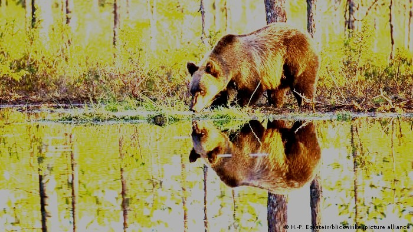
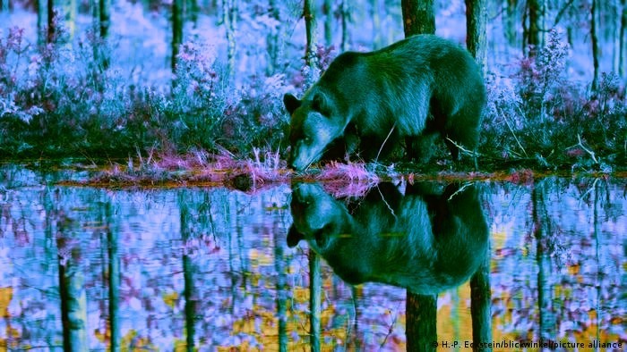
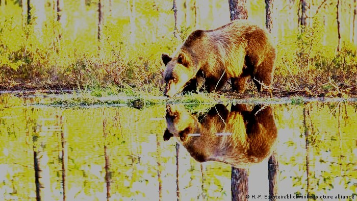
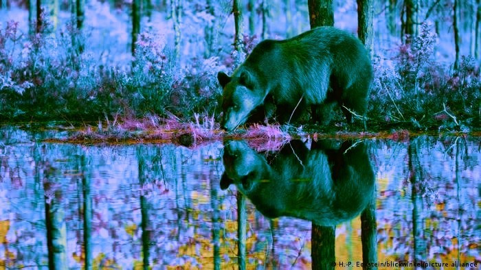
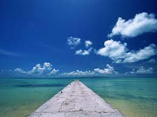
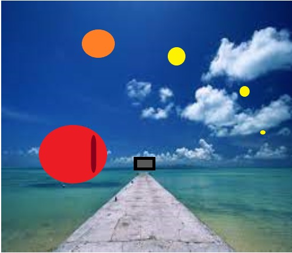
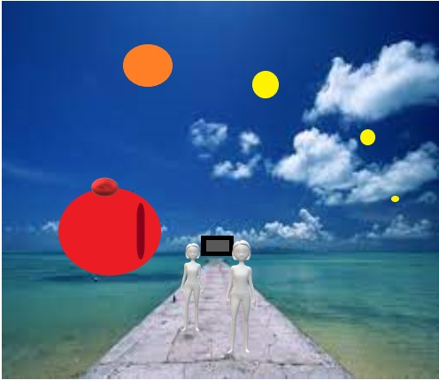
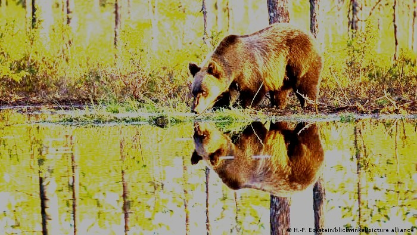
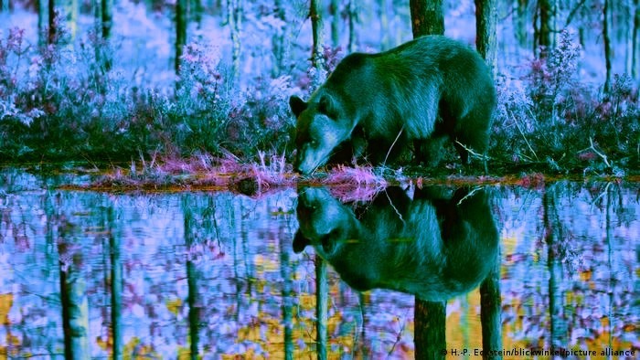

A través del tiempo muchas cosas fueron cambiando, en este caso hablando de lo digital , también tuvo una transformación que nos impulsa a no quedarnos con lo conocido , sino seguir avanzando junto a los nuevos desarrollos tecnológicos . Alan Turing es considerado como uno de los padres de la ciencia de la computación y precursor de la informática moderna. Proporcionó una influyente formalización de los conceptos de algoritmo y computación: la máquina de Turing. Con la que descifró los códigos nazis ocultos ,en la segunda guerra mundial . Los cambios tecnológicos revolucionarios , fueron dando una nueva perspectiva . Los nuevos medios son una reconstrucción de los medios tradicionales . Existe un renuevo en el contenido, mediante el uso y técnicas que son contemporáneas
Se basa en que todos los objetos de los nuevos medios, tanto se creen desde cero o sufran conversión, se componen de código digital, por ejemplo binario. O sea, están bajo una función matemática o manipulación algorítmica. Cabe destacar que un algoritmo informático es un conjunto de instrucciones definidas, ordenadas y acotadas para resolver un problema, realizar un cálculo o desarrollar una tarea. Es decir, un algoritmo es un procedimiento paso a paso para conseguir un fin. Este principio nos permite, por ejemplo, mejorar parámetros a una imagen (contraste, ruido). Mejorar los fotogramas en una película, fotograma en el ámbito audiovisual, es una de las muchas imágenes fijas que componen la imagen en movimiento o video ya sea de forma digital o analógica. Por ejemplo, cuando mejoramos una imagen, porque está demasiado oscura, esta mejora de contraste, brillo, está basada en operaciones matemáticas. En los programas que utilizamos para editar nuestras imágenes cada opción para mejorar las imágenes ya tienen los algoritmos preparados o manipulados para cada acción. Utilizamos pixlr, es un editor de imágenes online que cuenta con dos herramientas diferentes, una más completa (Pixlr Editor) y la otra más sencilla (Pixlr Express). Pixlr Editor permite: Modificar imágenes: Recortarlas, redimensionarlas, rotarlas, ajustar colores. Los cambios que realizamos sobre la imagen original fueron: aumentar la saturación, disminuir la temperatura, aumentar la tonalidad. En la segunda modificación, cambiamos el brillo, aumentamos el contraste, disminuimos los blancos, aumentamos los reflejos y disminuimos las sombras. Para realizar los siguientes trabajos utilizamos las técnicas de Paint 3D , para crear una atmósfera surrealista . Sobre la fotografía de un paisaje , fuimos agregando figuras geométricas en 2D , y luego en 3D , jugando y experimentando con las distintas posibilidades que nos aporta esta plataforma , las cuales no utilizamos habitualmente . Si bien siempre están a nuestro alcance , muchas veces las dejamos de lado por usar los materiales clásicos del arte , hoja y lápiz o pincel y bastidor . En la última foto cambiamos la iluminación. Para la portada nos dejamos llevar por la página de photofunia , agregando en formas predeterminadas nuestras fotos del rostro .

